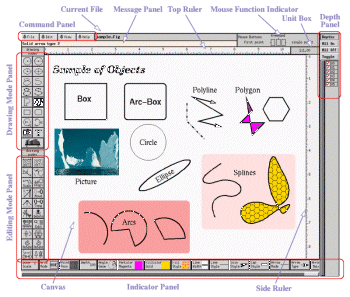
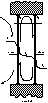
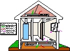
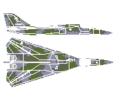
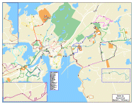

[ English Version
|
Japanese Version ]
Introduction
Xfig is an interactive drawing tool which runs under X
Window System Version 11 Release 4 (X11R4) or later, on most UNIX-compatible
platforms. It is
freeware, and available
via
anonymous ftp.
See New Features
and Bugs Fixed
to see what is changed in this release.
In xfig, figures may be drawn using objects such as
circles,
boxes, lines,
spline curves, text,
etc. It is also possible to import
images in formats such as GIF, JPEG, EPSF (PostScript), etc. Those objects
can be created, deleted,
moved or modified.
Attributes such as colors or line styles
can be selected from various options. For text, various
fonts are available. Text can also include Latin-1
characters such as `` '' or
``
'' or
`` ''.
''.
Here is a screen image of xfig.
Click on the image below for larger version (77k).

And here are some example figures extracted from the xfig distribution.
Click on them to see a larger version.




Xfig saves figures in its native
Fig format,
but they may be converted
into various formats such as PostScript, GIF, JPEG, HP-GL, etc. xfig
has facility to print figures to a PostScript
printer, too.
There are some applications
which can produce output in the Fig format.
For example, xfig doesn't have a facility to create graphs,
but tools such as gnuplot
or xgraph can create graphs
and export them in Fig format. Even if your favorite application
can't generate output for xfig, tools such as
pstoedit
or hp2xx may allow you to
read and edit those figures with xfig. If you want to import images
into the figure but you don't need to edit the image itself
(like this example),
it is also possible to import
images in formats such as GIF, JPEG, EPSF (PostScript), etc.
Most operation are performed using the mouse, but some operations may
also be performed using keyboard accelerators
(shortcuts). Use of a three-button mouse is recommended, but it is also
possible to use a two-button mouse (if you have a two-button mouse and
your X server doesn't emulate a three-button mouse, press the Meta (or Alt) key
and right mouse button together to simulate mouse button 2). Normally, mouse
buttons 1 to 3 are assigned to the left, middle, and right buttons respectively.
xfig 3.2.X and fig2dev 3.2.X include code for internationalization,
it allows use of local characters (e.g., Japanese) in xfig.
It uses standard internationalization (I18N) mechanism of X11R5,
and known to work for Japanese and Korean at this time.
Although they are not included in the official release,
it may possible to use some other languages
such as Greek, Hebrew, Cyrillic, etc., too.
See Internationalization about this.
xfig is started by the
xfig command.
xfig [ options... ] [ filename ]
options are
command line options which
may be used to customize
xfig.
It is also possible to use
X resources
instead of specifying command line options each time when starting
xfig.
If filename is given, the file will be loaded when xfig
is started.
The following components comprise the
xfig
window:
-
 Main Menus:
Main Menus:
-
Has buttons for global operations; such as
load/save file,
print or
export figures,
quit xfig, etc.
-
Drawing Mode Panel:
-
Has buttons for drawing operations; such as circle,
box, polyline,
text, etc.
-
Editing Mode Panel:
-
Has buttons for editing operations; such as move,
copy, delete,
scale, edit
attributes, etc.
-
Attribute Panel:
-
Has buttons to set attributes of objects; such as color,
line width, line
style, text font, text
justification, etc. There are also buttons for global settings such as
zoom scale or
grid mode.
-
Mouse Function Indicator:
-
The function of each mouse button is displayed here. This changes
with the mode of the operation (drawing, editing, etc.) to reflect the function
of each mouse button.
-
Rulers:
-
Graduations in the selected units (e.g. inches or cm) are displayed on top
(horizontal) and side
(vertical) ruler. The rulers are also used for scrolling the canvas.
-
Depth Panel:
-
This panel shows the depths
of all objects on the canvas. The user may
hide or show any depth by clicking on the checkboxes next to the depth number.
-
Units:
-
The scale of the drawing is displayed here, e.g. 1cm = 3m.
It is also used to change the units and/or scale.
-
Message Panel:
-
Various messages are displayed here. For example, the size of objects will
be displayed here when entering objects.
-
Canvas:
-
Area to draw figures. The canvas may be scrolled with the top
and side rulers or the arrow keys on the keyboard.
[
Contents |
Introduction |
Credits ]
{kind=link}
{kind=link}
{kind=link}
{kind=link}